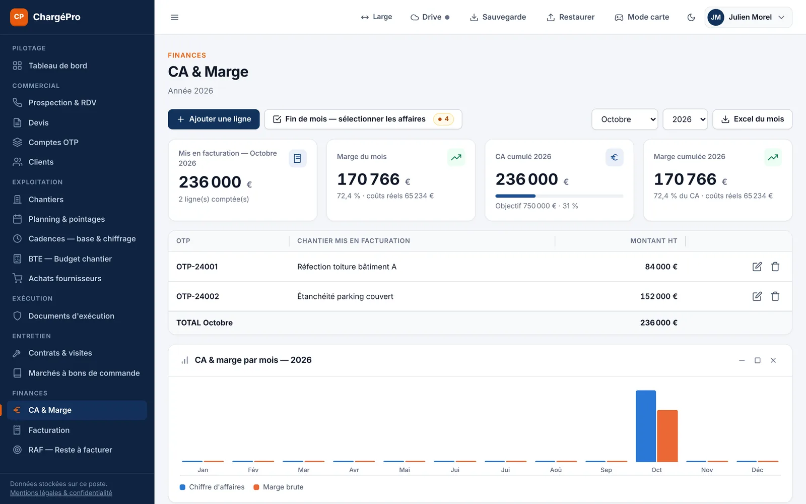

Pilotage & finances
Votre objectif annuel, suivi au jour le jour.
CA réalisé, marge brute, devis du mois, carnet de commandes, encours facturé : vos chiffres clés s'affichent dès l'ouverture, avec l'écart à l'objectif.
- CA et marge par mois, par OTP, par chantier
- Fin de mois : sélection des affaires à facturer, export Excel
- Reste à facturer et achats imputés par OTP
